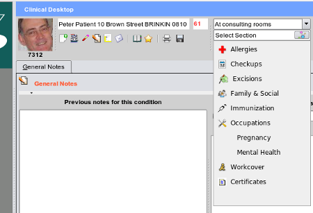

The Section List
There can never be enough buttons, to access all sections, in fact some users 'hate buttons with a passion', and much prefer to pick
from menu's or lists.
As I personally hate menu's with a passion (you will note there are no menu's at the top of the screen at all in EasyGP,
you can select the various clinical sections not linked to buttons, from the drop down list form the sections combobox:

Note that in this pre-alpha version of EasyGP, this menu is very much 'work in progress'. Many sections will be missing, either
not written yet, or 'not hooked up' - though much of the code could already be present.
To remove the popup menu if it dosn't seem to auto-hide itself - please use the escape key until this 'feature - read bug' is fixed.